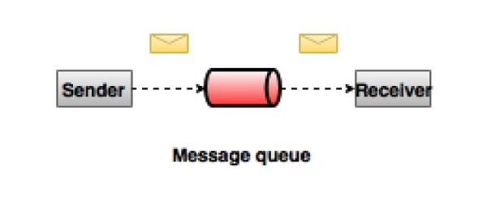
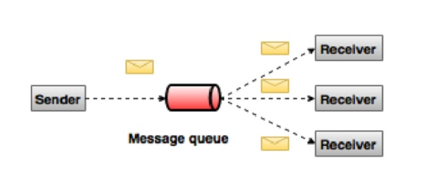

概述
关于大数据，有两个主要挑战： 第一个挑战是如何收集大量的数据，第二个挑战是分析收集的数据 为了克服这些挑战，必须需要一个消息系统
Kafka专为 分布式高吞吐量 系统而设计。作为一个更传统的消息代理的替代品。 与其他消息传递系统相比，Kafka具有 更好的吞吐量 ， 内置分区 ， 复制 和 固有的容错 能力，这使得它非常适合大规模消息处理应用程序
消息系统
消息系统 ：负责将 数据 从一个 应用程序 传输 到另一个 应用程序
- 分布式消息传递基于 可靠消息队列 的概念
- 消息在客户端应用程序和消息传递系统之间 异步排队
应用程序可以专注于数据，但不担心如何共享它
有两种类型的消息模式可用：
- 点对点
- 发布/订阅
大多数消息模式遵循发布/订阅
点对点
在 点对点 系统中，消息被 保留在队列 中：
- 一个或多个 消费者 可以 消耗 队列中的 消息
- 但是特定消息只能由 最多一个消费者 消费
- 一旦 消费者 读取 队列中的 消息 ，它就从该 队列中消失
典型示例是订单处理系统：
其中每个订单将由一个订单处理器处理，但多个订单处理器也可以同时工作

发布/订阅
在 发布/订阅 系统中， 消息 被 保留在主题 中：
- 与点对点系统不同， 消费者 可以 订阅 一个或多个主题 并 使用 该 主题中的所有消息
- 在 发布/订阅 系统中，消息生产者称为 发布者 ，消息使用者称为 订阅者
一个现实生活的例子是Dish电视，它发布不同的渠道，如运动，电影，音乐等
任何人都可以订阅自己的频道集，并获得他们订阅的频道时可用

Kafka
Apache Kafka是一个 分布式 发布/订阅消息系统 和一个强大的 队列 ，可以处理大量的数据，并使您能够将消息从一个端点传递到另一个端点：
- Kafka适合 离线 和 在线 消息消费
- Kafka消息 保留在磁盘 上，并在 群集内复制 以防止数据丢失
- Kafka构建在 ZooKeeper 同步服务之上，与Apache Storm和Spark非常好地集成，用于 实时流式 数据分析
优点
- 可靠性 ：Kafka是 分布式 ，分区，复制和容错的
- 可扩展性 ：Kafka消息传递系统 轻松缩放 ，无需停机
- 耐用性 ：Kafka使用 分布式提交日志 ，这意味着消息会尽可能快地保留在磁盘上，因此它是持久的
- 性能 ：Kafka对于发布和订阅消息都具有 高吞吐量 。 即使存储了许多TB的消息，它也保持稳定的性能。
Kafka非常快，并保证 零停机 和 零数据丢失
场景
Kafka可以在许多用例中使用。 其中一些列出如下：
- 指标：Kafka通常用于操作监控数据。 这涉及聚合来自分布式应用程序的统计信息，以产生操作数据的集中馈送
- 日志聚合解决方案：Kafka可用于跨组织从多个服务收集日志，并使它们以标准格式提供给多个服务器
- 流处理：流行的框架（Storm或Spark）从主题中读取数据，对其进行处理，并将处理后的数据写入新主题，供用户和应用程序使用
- Kafka的强耐久性在流处理的上下文中也非常有用
Kafka是一个统一的平台，用于处理所有实时数据Feed Kafka支持低延迟消息传递，并在出现机器故障时提供对容错的保证 它具有处理大量不同消费者的能力，Kafka非常快，执行2百万写/秒 Kafka将所有数据保存到磁盘，这实质上意味着所有写入都会进入操作系统(RAM)的页面缓存，这使得将数据从页面缓存传输到网络套接字非常有效